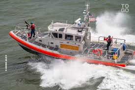

Chargement de balles de coton (1885) Le territoire du Togo est à 25 % cultivé (cela va du petit champ de mil, au nord du pays, aux terres argileuses du sud du Togo, qui produisent des patates douces et du maïs) et est parvenu à une autosuffisance alimentaire à peu près complète.
L'agriculture assure en grande partie la sécurité alimentaire des Togolais, le secteur rural fait vivre encore environ 80 % de la population.
Les cultures sont très diverses : mil, sorgho, maïs, manioc, ignames, cacao, café, karité. Le coton est la principale culture industrielle et le premier produit d'exportation agricole. On remarque aussi que ce sont les petites et moyennes exploitations qui dominent.
Par ailleurs, les fortes densités au Togo ont conduit à un besoin accru en bois combustible, qui est la cause d'un des taux les plus élevés de déforestation en Afrique.
En mars 2006, on note un élan d'industrialisation de l'agriculture par le gouvernement togolais qui entame (à nouveau) la motorisation de l'agriculture, jusque-là pratiquée par les paysans au moyen de la force manuelle avec des outils traditionnels comme la houe et la daba
.Mine de phosphate, Société Nouvelle des Phosphates de Togo, décembre 2007. Le pays possède du pétrole en offshore et aussi du marbre, des attapulgites, du manganèse, du calcaire, du fer, de la tourbe, de l'or, de l'uranium, mais surtout un très important gisement de phosphates qui représente plus de 40 % des recettes d'exportation.
Le Togo est d'ailleurs le cinquième producteur mondial de phosphates.L'extraction est effectuée à ciel ouvert dans les mines d'Hahoté et d'Akoumape. L'usine de traitement est située à Kpémé, près d'un important quai d'embarquement (1 200 mètres de long) et dispose d'une capacité de production de 3,4 millions de tonnes par an.
La production de phosphates a décliné entre 2007 et 20101, faute d’investissements substantiels et à cause d’une gestion défectueuse. En réaction, les pouvoirs publics togolais ont créé la Société nouvelle des phosphates du Togo (SNPT) dont l’ambition est de porter la production à 2 millions 500 000 tonnes par an la production (contre 695 150 tonnes en 2010 d'après la BCEAO). Depuis, la production a régulièrement dépassé les 1 million 100 000 tonnes par an en 2012, 2013, 2014 et 2015.
Le barrage hydroélectrique de Nangbéto, sur le fleuve Mono (réalisation conjointe du Bénin et du Togo) fournit entre le quart et le tiers des besoins en électricité des deux pays. Le Togo et le Bénin dépendent pour 70 % du Ghana. De plus une centrale thermique existe sur le territoire du Port Autonome de Lomé, contribuant à réduire le déficit énergétique du pays. Les besoins restent néanmoins nettement supérieurs à l'offre. En octobre 2018, EDF et l’entreprise britannique d’électrification BBOXX s’accordent sur une participation du français à l’électrification du pays. Le pays souhaite atteindre une électrification de l’ordre de 50 % aux alentours de 2020 et de 90% vers 2030.
Le port autonome de Lomé est le seul port en eau profonde de la sous-région (tirant d'eau de 13 mètres[réf. nécessaire]), il dispose d'infrastructures et d'équipement adaptés à des trafics diversifiés.
Le trafic conteneurisé (par conteneurs) à Lomé a doublé en trois ans pour atteindre 212 000 EVP (équivalent vingt pieds) en 2005. Le port autonome de Lomé est le seul port en eau profonde de la sous-région Ouest-africain avec un tirant d'eau de 15 mètres[réf. nécessaire]. D'importants investissement ont été consacrés pour accroître sa production et améliorer sa compétitivité face à ses grands concurrents que sont le port autonome d'Abidjan et le port autonome de Dakar. Le port autonome de Lomé a modernisé ses infrastructures et est devenu un des ports les plus modernes du golfe de Guinée. L'armateur MSC y a établi sont hub ouest africain. d'autres armateurs de référence tels que Maersk, CMACGM et PIL y sont aussi présents.
L'axe Nord-Sud, qui relie Lomé à Dapaong et à la frontière burkinabè, constitue pour le Togo son principal axe de communication, favorisant les échanges commerciaux avec les pays sahéliens.
Le réseau ferroviaire comprend 340 km de voies ferrées, dont le principal tronçon est de 276 km : Lomé/Atakpamé/Blitta (vers le Nord).

Comme de nombreux pays africains (Sénégal, Maurice, Namibie), le Togo s’est doté d’une zone franche dès la fin des années 1980.
La réglementation togolaise concernant l’implantation en zone franche est souple.
En plus des nombreux avantages qu'accorde le code des investissements, la zone franche du Togo offre aux entreprises exportatrices agréées un des meilleurs environnements réglementaires d’Afrique de l’Ouest.
Cet espace permet :
Aucun impôt pendant les 10 premières années d’activité et stabilisation du taux à 15 % à partir de la onzième année
Exonération de tous les droits de taxes lors de l’exportation des produits importés ou fabriqués dans la zone franche
Exonération de tous droits et taxes à l’importation sur les matières premières ainsi que sur le matériel et l’équipement de l’usine (les véhicules utilitaires bénéficient d’une réduction de 50 % des mêmes droits et taxes)
Exonération de l’impôt sur les dividendes pendant les dix premières années pour les actionnaires non Togolais
Stabilisation de l’impôt sur les salaires au taux réduit de 2 % pendant la durée de la vie de l’entreprise
Tarifs préférentiels sur les prestations des services publics (électricité, eau, téléphone, port)
Possibilité de détention de comptes bancaires en devises
Liberté de transfert de capitaux
D’autres mesures incitatives soutiennent les activités de ces entreprises :
Garantie de protection contre la nationalisation des biens des investisseurs étrangers
Absence de quota d’exportation du Togo vers les États-Unis
Appartenance du Togo à la Convention de Lomé lui garantissant un accès préférentiel aux marchés européens
D'autre part, le statut de zone franche de transformation pour l’exportation peut être accordé à des zones physiquement délimitées, clôturées et isolées. Il peut être également accordé à titre individuel à toute entreprise exportatrice dûment enregistrée au Togo, quel que soit son lieu d’implantation sur le territoire national. La création d’une telle zone franche se fait par décret.
L’administration des zones franches est assurée par une société d’économie mixte, la SAZOF, qui a pour attribution l’identification et la délimitation des zones, la recherche des promoteurs, la réalisation des infrastructures de base, l’accomplissement des formalités administratives pour les promoteurs, la coordination des zones, l’instruction et l’analyse des dossiers d’agrément.
Pour être éligibles au statut de zone franche les entreprises doivent garantir l’exportation de leur production, donner la priorité des emplois permanents aux Togolais et entrer dans une ou plusieurs catégories ci-après :
entreprises à forte densité de main d’œuvre ;
entreprises à technologie de pointe ;
entreprises axées sur l’utilisation de matières premières locales ;
entreprises exportatrices pratiquant la sous-traitance internationale ;
entreprises produisant des intrants pour des compagnies énumérées ci-dessus ;
entreprises de services pour les autres sociétés de la zone franche ou pour des clients internationaux.
Les entreprises implantées en zone franche : chaussures, ordinateurs, cd, peintures ou pâtes alimentaires…
La SAZOF a favorisé l’arrivée de nombreuses entreprises en zone franche aux activités très diverses. La liste des entreprises en activité donne une idée très précise des secteurs industriels ou de services ayant bénéficié des avantages de la zone.
Ainsi, sont implantés des sociétés pharmaceutiques, des fabricants d’huiles végétales, des assembleurs informatique, des distributeurs de produits cosmétiques, des prothésistes dentaires ou des entreprises de transport routier … En 2010 le pays a réussi à atteindre le point l'achèvement de l'initiative « PPTE » (pays pauvres très endettés). Dès lors s'ouvre une nouvelle ère de relance économique pour le pays, d'importants chantiers d'infrastructure voient le jour dans le pays notamment la construction d'un 3e quai au port autonome de Lomé par le groupe français Bolloré, l'aménagement et l'extension de l'aérogare de Lomé, ainsi que la construction de plusieurs axes routiers dans le pays. Dans cette même dynamique le gouvernement togolais a procédé à la fusion de deux régies financières importantes que sont la Douane et les impôts, pour donner naissance à l'office togolais des recettes (O.T.R). L'objectif de cette fusion est de lutter contre les fraudes fiscales, la corruption, et l'augmentation des recettes fiscales du pays, l’économie togolaise depuis lors est en nette croissance.